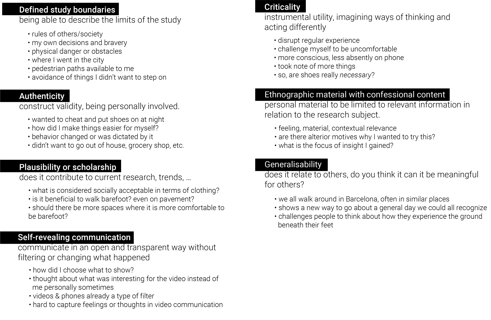

To live with your own ideas. Aren’t we already doing that every day? But how can we do this with more intentionality, with a goal in mind, and be able to reflect on those ideas? To me, that was what the experience of the week was about. Making the magic machines with the help of Kristina Anderson was a really cool exercise. (More can be seen in the “Assignments” section of the website). I liked how we had to think “inside the box” with waste materials at hand. I hadn’t done any crafting like that for a long time, but it made me realize that an activity like that can be beneficial for people at any age, because it is so simple yet the outcomes are many and do show some type of insight into the minds of others and our own. While I am now reflecting on making my magic machine, I realize that while I was making the machine, I was already putting a lot of meaning and symbolism into each piece on the machine. Perhaps my magic machine had to do with communication because with this master’s I am constantly reflecting and thinking about what I like and am interested in. I need to communicate these ideas to myself, others, and receive their ideas in turn. However, I think my magic machine could be used for more than just communication between people. Varying inputs and outputs could be used. For example, I would use it to listen/gain inspiration from books, movies I watch, talks I attend, electronic devices, etc. I could imagine doing the workshop again and seeing completely different outcomes every time, each with a unique function.
On Thursday, with the guidance of Oscar and Angella, we had the chance to fully live with our own ideas. We watched several videos of past years to give us an idea of previous experiences. While watching them, I rather quickly thought of my idea. It was simple, but in a way I felt I could learn a lot from. I decided to walk barefoot in the city for 24 hours, starting the moment I left the class. I chose this idea because I felt it was something I could challenge myself to do in a brave way, even though I knew I would be uncomfortable. The main questions I was asking myself by doing this exercise were: how can I more directly understand the city that surrounds me? Will it make me more in tune with the physicality of the materials that are under my feet? Will it teach me something about the places I go and that are available for me to walk as a pedestrian? In order to answer these questions, removing the most direct barrier to the ground, shoes, was the decision I took.
This was immediately uncomfortable as soon as I left the building and felt the cold tiles against my feet and walked into the metro. It felt like something I shouldn’t be doing. I quickly realized I wouldn’t be accepted barefoot everywhere when a guard instructed me to put shoes on at decathlon. I noticed the stares of people around me since I was the only person not wearing shoes. It made me feel self conscious or that I was weird and not fitting in with the behavior of others. I noticed that I felt much more comfortable doing the experiment when I was with my classmates, even if they were not doing the same thing. This feeling of group acceptance had a strong effect on me during the 24 hours. One thing I was thinking about a lot during the day was safety. Where I felt ok walking and where I didn’t. I was extremely conscious, especially in the beginning. I had to avoid broken glass, sharp objects, pee, poop, trash, cigarette butts, food, and puddles to name a few. It made me aware of the types of litter and waste objects people just throw on the street. I feel I am used to looking down while I walk because of walking while being on my phone, but this was me looking down while being way more conscious about it. I did enjoy experiencing the different feelings my feet were sensing. The hot pavement or cold tiles, and how their different textures and patterns changed my walking experience as I went. I noticed the markings on the ground much more, the change in levels in curbs and sidewalks, how stairs felt, and the pain of tired feet after walking for much of the day. I didn’t once touch any natural thing like dirt or grass unless I went out of my way. I have been feeling that Barcelona is not filled with too many parks with what I would classify as any lush nature, but it made me realize that I might go through entire days without directly interacting with any nature.
Though the experiment was very physical, it became inherently social as well. Both with my own thoughts and the looks or perceived judgments of those around me. I heard a total of 3 people make a comment, the first saying “where are you going without your shoes?”, the second saying “ey hola! Que bien!” and the third something like “why is she going barefoot?”. The three comments indicate different perceptions, from curious, to appreciative, to perhaps judgemental. As the day went on, I became more and more confident in my barefoot-ness. Although, I have to say I was happy and grateful to put my shoes back on. I felt that each time I washed my feet it was a healing and mentally cleansing ritual. I gained a lot of insight by doing the experiment, even though it was uncomfortable at times and made me want to change my behavior.
I felt that this exercise was a perfect example of using first person perspective. I was directly using myself, physically, to test my own ideas. I was involving myself in a physical manner to gain a more direct perspective. By using myself as a tool and nothing else, it allowed me to really focus on what I was feeling and experiencing without the need for involving anything or anyone else. Doing this really helped me understand what a first person perspective approach really means. By living it out, I felt I was able to be very attached and personal with the project. In using a first person perspective for future work, I think it would help me feel more impacted along with allowing me to have a greater impact on projects. I loved seeing all the videos from the class. We were given the assignment on Wednesday, and to see what everyone came up with by Friday was really cool. We all had such unique and different ideas, though I could see similarities in themes for a lot of them. Specifically with my post-consumer collective, all of our central themes were quite different. While Rei and Roberto focused on waste/research of where things end up or come from, Emilio had a more social project and Tatiana had a very introspective approach. All of these ideas, along with mine, don't relate to each other directly. However, I think it makes sense because it is only one idea we thought of to do in one day. It shows our varying interests and questions we have. As a class, I could draw a lot of parallels between videos and ideas people had which was inspiring and excited me to further collaborate with my classmates. Our discussion on Friday concerning autoethnography was super informative for me. By quickly reflecting then sharing with the class, I got to understand more about and reflect about the process. The points in Andres Lucero’s guide really challenged me to think about the process and question myself and the way that I interacted with the experiment. I particularly enjoyed thinking about authenticity and plausibility.
